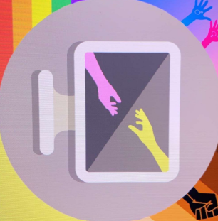

Projects
Python Project

One of the projects I completed was a Python project, which helped me apply my programming knowledge in a real-world scenario. I developed my skills in writing efficient code, debugging errors, and solving logical problems. This experience boosted my confidence in working independently.
Team Project for Software Fundamentals

As part of my coursework, I worked on a team project for Software Fundamentals. This experience taught me teamwork and effective documentation I also learn't the types of methodology to use when running diffrent type of businesses .
Computer Systems

I studied Computer Systems, which gave me an understanding of hardware-software interaction, including memory management, networking, and cybersecurity.
Cyberbullying Project with Amazon
I worked on a cyberbullying research project with Amazon, exploring online safety policies and AI-driven moderation tools. This project highlighted the ethical responsibilities of tech companies.